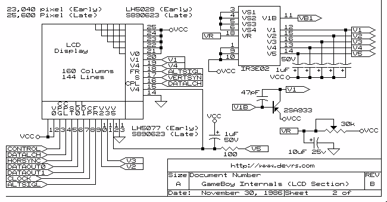
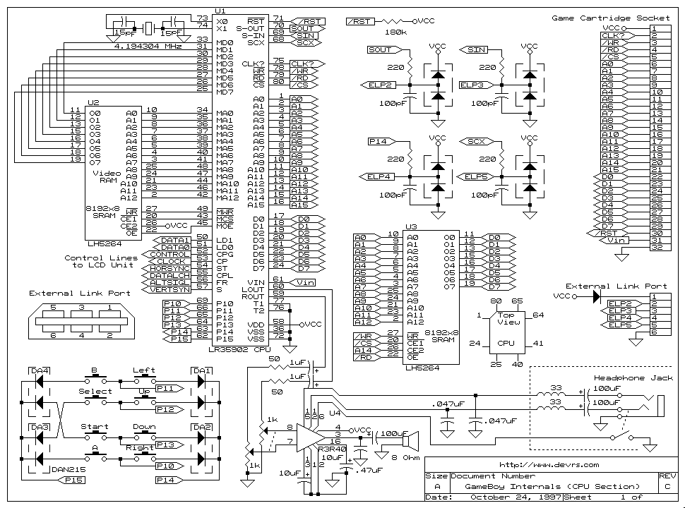
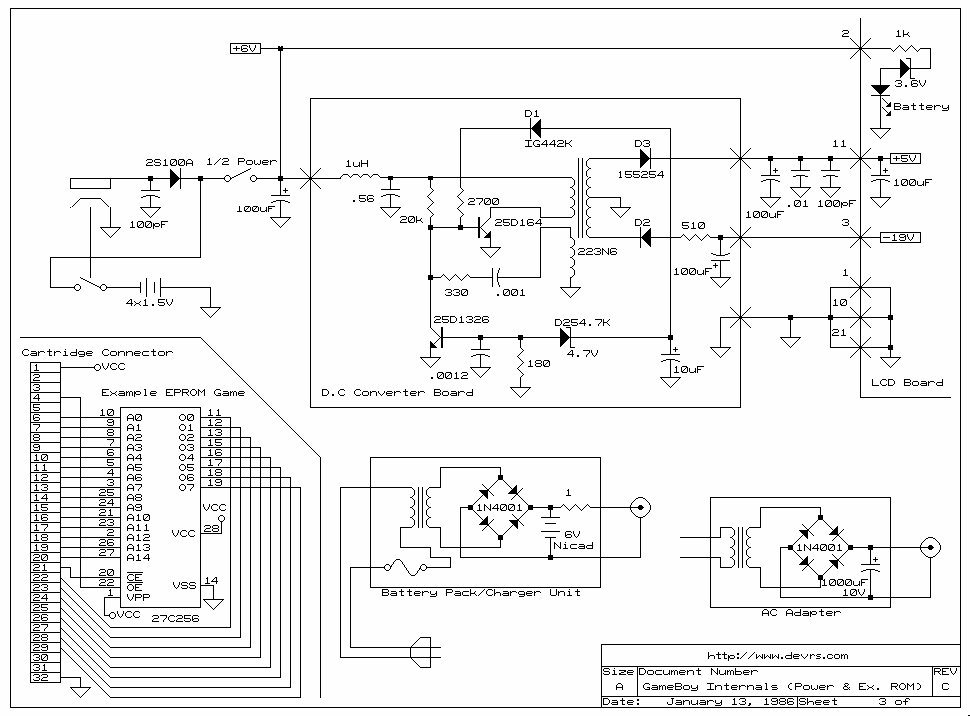
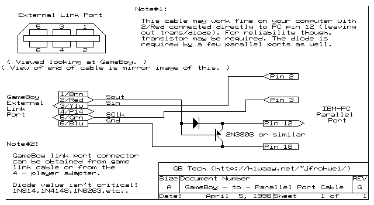

Links
- Pinout http://www.overclockers.com/forums/showthread.php?t=116959
- Pinout original site http://www.devrs.com/gb/
- Sample GB 2 VGA http://www.bradsprojects.com/gameboy-to-vga-converter-in-progress/
- Another usage of the screen http://flashingleds.wordpress.com/2010/10/26/intercepting-the-gameboy-lcd/
- Misc customization http://blog.gg8.se/wordpress/category/gameboy/
- Cartridge Eagle https://github.com/dwaq/Homebrew-Gameboy-Cartridge
- Other documentation with interresting diagrams http://marc.rawer.de/Gameboy/docu_1.htm#1.1



| lines |
160 px |
| pixels per line |
144 px |
| freq |
60 Hz |
| lines per sec |
9,600 lines/sec |
| pixels per sec |
1,382,400 px/sec |
| image size |
23,040 px |
| one pixel info |
2 bits |
| one image size in mem |
5,760 bytes |
